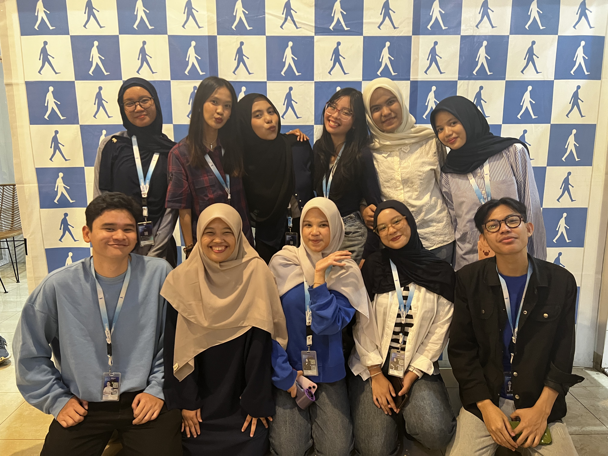

August 2025 - Present
I assisted in the recruitment process for AIESEC Open Recruitment, organizing and promoting campaigns to attract potential applicants. I created engaging promotional content and managed communication channels to increase visibility and reach. By collaborating with functional teams, I helped ensure the smooth execution of recruitment strategies while also supporting applicant tracking, interviews, and onboarding to enhance the candidate experience. Additionally, I contributed to team meetings and initiatives that strengthened outreach and fostered member engagement.
Key Achievements:
- Attracted 700+ applicants through targeted promotional content and campaign management.
- Managed 3 communication channels (social media, email, and internal platforms) to ensure effective applicant engagement.
- MSupported the interview and onboarding process for new members, contributing to a smooth transition into AIESEC.
- Collaborated with cross-functional teams to increase recruitment campaign efficiency.